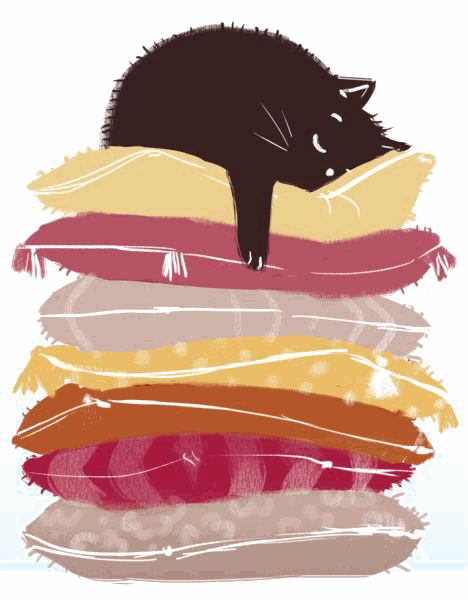
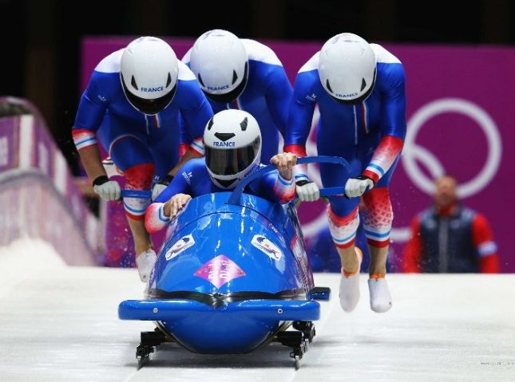
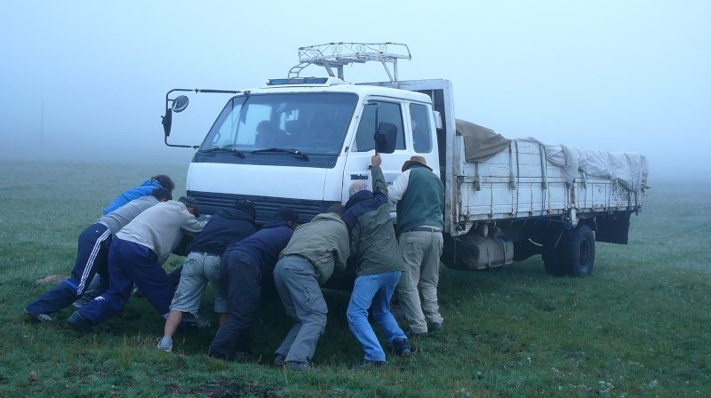
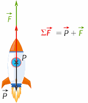
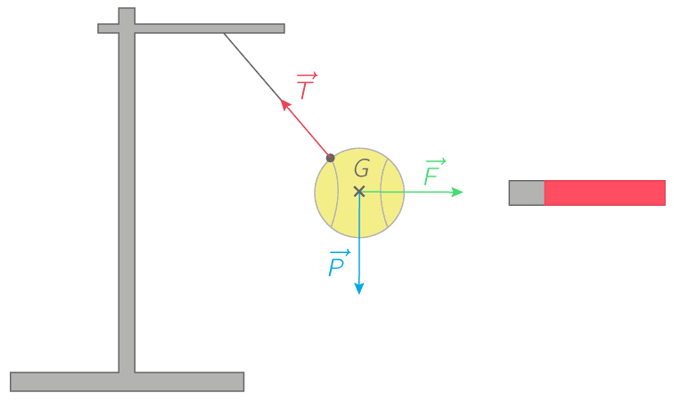
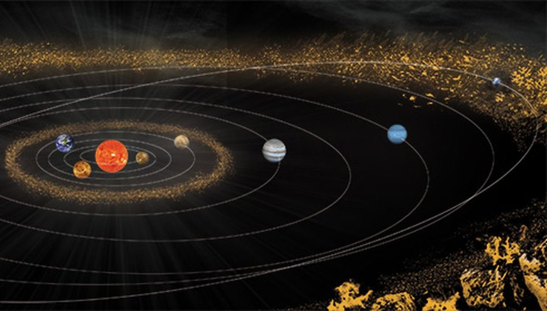
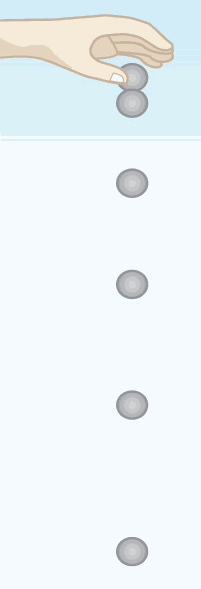
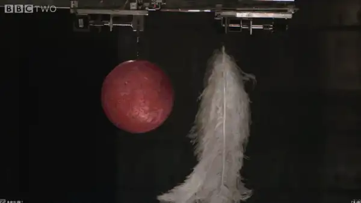

Ce chapitre sera débloqué en fin de séquence,
au rythme de la classe. Le code de déblocage est transmis via le cahier de textes —
il figure aussi en bas de ta fiche de cours.
Physique-Chimie · 2nde · Thème 2 — Mouvements et interactions
Le principe d'inertie
Thème 2 · Chapitre 3 — cours & exercices corrigés
01 Définitions
✎
Définition — Système au repos
Le repos en physique signifie pour un objet d'être stationnaire par rapport à un référentiel particulier ou par rapport à un autre objet. Son vecteur vitesse est nul à tout instant (v = 0).
Attention !
Le repos n'existe que dans un système de référence. Dans l'univers il n'y a pas de repos absolu.
Par exemple, la Terre tourne autour du Soleil qui tourne autour du centre de la galaxie et ainsi de suite.
Ainsi, le chat est en mouvement dans le référentiel héliocentrique par exemple.

Image 1 — Ce chat est au repos dans le référentiel terrestre.
✎
Définition — Inertie
L'inertie est la difficulté à modifier le mouvement d'un système, elle est d'autant plus importante que la masse du système est importante.
Plus la masse d'un système est importante, plus il est dit inerte, c'est-à-dire qu'il est d'autant plus difficile de le mettre en mouvement ou de modifier son mouvement.


Image 2 — Il est plus facile de mettre un bobsleigh en mouvement qu'un camion ; pour ce dernier il faudra pousser plus fort, c'est-à-dire appliquer une force plus importante, même en négligeant les frottements avec le sol.
Un système subit souvent plusieurs forces à la fois. Pour savoir comment il va se comporter, on les additionne.
✎
Définition — Résultante des forces
La résultante des forces, notée ∑F, est la force obtenue par l'addition vectorielle de toutes les forces en présence s'appliquant sur le système.

Image 3 — La résultante des forces ∑F est l'addition vectorielle des vecteurs représentant les forces P et F qui s'appliquent sur la fusée.
Exercice 1 — Somme de vecteurs
Représenter la somme de ces vecteurs.
Voir la correction
On place les vecteurs bout à bout (l'origine de chacun à l'extrémité du précédent) ; la résultante ∑F relie l'origine du premier vecteur à l'extrémité du dernier.
∑F = F1 + F2
∑F = F1 + F2 + F3 + F4
Exercice 2 — Le skieur
Le skieur représenté ci-contre subit quatre forces pendant sa descente.
Son poids. P = 700 N
La réaction du sol. R = 500 N
Les frottements de la neige sur ses skis. fS = 50 N.
Les frottements de l'air. fA = 100 N
1 – En respectant l'approximation du point matériel, représenter la situation par un schéma. Vous choisirez l'échelle qui vous convient.
2 – Retrouver la résultante des forces qui s'appliquent sur le skieur.
Donnée : les forces de frottement sont toujours colinéaires au déplacement du système, et de sens opposé.
Voir la correction
Question 1 — le schéma
Le skieur est réduit à un point. Les quatre forces sont représentées à l'échelle choisie : 100 N pour une unité.
Question 2 — la résultante
∑F = R + P + fS + fA
Schémas à l'échelle sur une pente de 44° : c'est l'inclinaison pour laquelle la réaction du sol (500 N) compense exactement la partie du poids perpendiculaire à la pente.
02 Le principe d'inertie
Une fois les forces additionnées, que dit leur résultante du mouvement du système ?
A — Le principe
✎
Propriété — Principe d'inertie
Si les forces qui s'exercent sur un système se compensent, ou sont négligeables, autrement dit que leur résultante est nulle (∑F = 0) alors :
il est au repos s'il n'a pas de vitesse initiale ;
il a un mouvement rectiligne uniforme s'il possède une vitesse initiale.
Image 4 — Les forces qui s'appliquent sur le chat se compensent. Autrement dit, la résultante des forces est nulle.
∑F = R + P = 0
Sa vitesse initiale étant elle aussi nulle, le chat est donc au repos.
Exercice 3 — Le chat
Retrouver la résultante des forces qui s'appliquent sur ce chat.
Voir la correction
∑F = R + P = 0
La vitesse initiale du chat est nulle, il est donc bien au repos.
B — Sa réciproque
✎
Propriété — Réciproque
Réciproquement, si un système est au repos ou en mouvement rectiligne uniforme, les forces qui s'exercent sur lui se compensent.
Exercice 4 — Repos ou mouvement ?
Les systèmes suivants sont-ils au repos ou en mouvement ? On suppose qu'ils n'ont pas de vitesse initiale.

Voir la correction
Premier système
∑F = R + F + P ≠ 0
Le système est mis en mouvement par les forces qui s'appliquent sur lui.
Et si le système n'est ni au repos, ni en mouvement rectiligne uniforme ?
✎
Propriété — Contraposée
Si un système n'est ni immobile ni en mouvement rectiligne uniforme, alors les forces qui s'exercent sur lui ne se compensent pas. La réciproque est également vraie.

Image 5 — Dans le référentiel héliocentrique, les planètes n'ont pas un mouvement rectiligne et uniforme car elles sont soumises à une force, la force gravitationnelle exercée par le Soleil, qui n'est compensée par aucune autre.
Exercice 5 — Quel système ?
Ces systèmes ont tous une vitesse initiale non nulle. Lequel peut être à l'origine de la chronophotographie ?
Voir la correction
Le mouvement du système tel qu'il est décrit par la chronophotographie est rectiligne uniforme, d'après la contraposée du principe d'inertie les forces qui s'appliquent sur lui se compensent donc (∑F = 0). Il ne peut s'agir que du système de gauche.
Un cas particulier où une seule force agit, sans rien pour la compenser.
✎
Définition — Chute libre
Un corps est en chute libre si son poids est la seule action mécanique qui s'exerce sur lui.
Remarque
Dans l'air, sauf par approximation lorsque la chute est très courte, il est impossible d'obtenir une vraie chute libre à cause des forces de frottements avec l'air augmentant avec la vitesse.
Un objet en chute libre ne peut donc pas respecter le principe d'inertie, la seule force s'exerçant sur lui n'étant pas compensée. Son mouvement sera donc rectiligne mais non uniforme car la norme de son vecteur vitesse va varier de telle sorte qu'il va accélérer, c'est-à-dire que sa vitesse va augmenter indéfiniment au cours de sa chute.

Image 6 — Chronophotographie d'une chute libre.

Vidéo 1 — Pour observer une vraie chute libre, il faut placer les corps dans le vide et ainsi éliminer les frottements dus à l'air. On constate notamment que la chute ne dépend pas de la masse du corps, une balle et une plume tombant à la même vitesse et impactant le sol au même moment. Extrait BBC Two.
DSLien du DS (corrigé) — à choisir chaque année par Loïcla source porte un QR « DS – 2023 | 2024 » (document en ligne de l'établissement) ; volontairement laissé en attente (règle : le DS n'est jamais posé automatiquement)
M. Van HoordeLycée général Isaac de l'Étoile · Poitiers